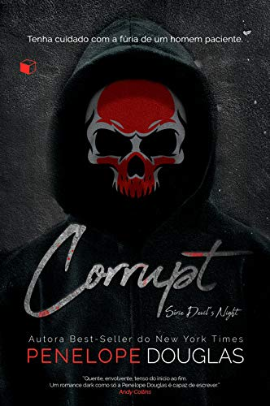
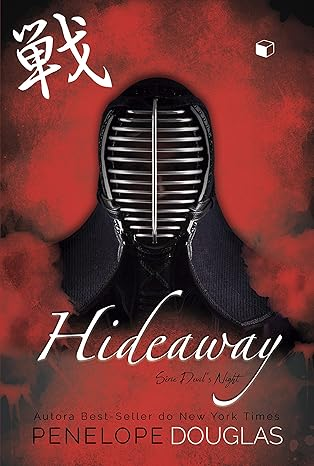
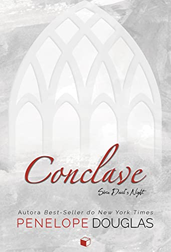
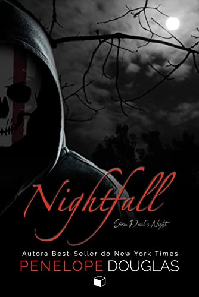

Devil's Night
Corrupt (Devil's Night Livro 1)

ERIKA:
Sempre me disseram que os sonhos eram os desejos do nosso coração. Meus pesadelos, no entanto, acabaram se tornando minha obsessão.
O nome dele é Michael Crist.
O irmão mais velho do meu namorado se parece com aquele tipo de filme de terror, onde você cobre o rosto com as mãos, mas espia por entre os dedos. Ele é lindo, forte, e totalmente assustador. Sendo uma estrela do basquete profissional, assim como foi no time da faculdade, ele estava mais preocupado com a sujeira em sua sola de sapato do que comigo.
Mas eu o notei.
Eu o vi e ouvi. Todas as coisas que fez, as façanhas... Por anos, apenas roí minhas unhas, incapaz de afastar o meu olhar.
Agora estava recém-formada no ensino médio e a caminho da faculdade, mas nem assim deixei de observar Michael. Ele é mau, e toda as coisas ruins que vi já não podem permanecer apenas em minha mente.
Porque ele finalmente percebeu minha existência.
MICHAEL:
O nome dela é Erika Fane, mas todos a chamam de Rika.
A namorada do meu irmão sempre frequentou minha casa, desde criança, e sua presença era constante à mesa do jantar. Todas as vezes que eu entrava na sala, ela abaixava o olhar, e mantinha-se imóvel quando eu me aproximava.
Sempre pude detectar o medo que a rodeava, e mesmo que nunca tenha possuído seu corpo, eu sabia que possuía sua mente. E aquilo era tudo o que eu queria, de qualquer forma.
Até que meu irmão se alistou no serviço militar, deixando Rika sozinha na universidade.
Na minha cidade.
Desprotegida.
A oportunidade era boa demais para ser verdade, assim como o momento. Porque, sabe... três anos atrás ela colocou alguns dos meus amigos do colégio na cadeia, e agora eles estavam em liberdade.
Nós esperamos. Fomos pacientes. E agora... cada um de seus pesadelos se tornaria realidade.
Corrupt, é um romance ÚNICO com final próprio.
Hideaway (Devil's Night livro 2)

BANKS:
Imerso nas sombras da cidade, há um hotel chamado The Pope. Decadente, deserto e sombrio, encontra-se abandonado e rodeado por um mistério há muito esquecido.
Mas você acha que é verdadeira, não é, Kai Mori? A história a respeito do décimo segundo andar. O mistério que cerca o hóspede sombrio que nunca se registrou para entrar ou sair. Você acha que vou ajudá-lo a encontrar o refúgio secreto para chegar até ele, não é?
Você e seus amigos podem até tentar me assustar. Podem tentar me pressionar. Porque mesmo que eu lute para disfarçar o que sinto quando você olha pra mim — desde adolescente —, acredito que talvez o que está procurando esteja mais perto do que imagina.
Eu nunca vou traí-lo.
Então se prepare.
Na Devil’s Night, você será a caça.
KAI:
Você não faz a menor ideia do que estou procurando, pequena. Você não sabe o que tive que fazer para sobreviver aos três anos na prisão, quando fui condenado por um crime que cometeria outra vez com o maior prazer.
Ninguém pode saber o que me tornei.
Eu quero aquele hotel, quero encontrá-lo e acabar logo com isso.
Quero minha vida de volta.
Mas quanto mais tempo passo ao seu lado, mais percebo que este novo eu é exatamente quem sempre fui destinado a ser.
Então pode vir, garotinha. Não se acovarde. Minha casa fica na colina. Existem muitas maneiras de entrar, mas apenas com sorte você conseguirá sair.
Eu vi o seu refúgio. Está na hora de você ver o meu.
Por mais que o romance HIDEAWAY seja independente, o enredo é uma continuação dos eventos que tiveram início em CORRUPT (Devil's Night #1). Realmente recomendo que você leia o primeiro livro antes de ler este.
Kill Switch (Devil's Night livro 3)

“Eu faria algo muito pior do que aquilo que me levou à prisão. Ela não imagina como as coisas poderiam piorar.”
WINTER:
Mandá-lo para a cadeia foi a pior coisa que já fiz. Não importava se ele havia cometido o crime ou que eu desejava que ele estivesse morto. Talvez eu tenha pensado que teria tempo suficiente para desaparecer antes que ele fosse solto, ou então que ele teria tomado jeito e se tornado alguém melhor.
Mas estava errada. Três anos se passaram rápido demais, e agora ele parecia pior do que nunca. A prisão apenas serviu para que ele tivesse tempo para elaborar um plano.
E por mais que eu tenha previsto sua vingança, não esperava por isso.
Ele não queria só me machucar. Ele queria acabar com tudo.
DAMON:
Em primeiro lugar, eu acabaria com o pai dela. Foi ele quem afirmou a todos que eu a obriguei. Ele disse que sua garotinha havia sido uma vítima, mas eu era um garoto também, e ela quis tanto quanto eu.
Segundo... acabar com qualquer possibilidade de fuga para ela, sua irmã e sua mãe. As mulheres Ashby estavam sozinhas agora, e desesperadas por um cavaleiro em uma armadura brilhante.
Mas não era isso que elas encontrariam.
Não, já era hora de dar ouvidos ao meu pai e assumir o controle do meu futuro. Era hora de mostrar a todos eles – minha família, a dela, aos meus amigos –, que eu nunca mudaria e que minha única ambição era me tornar o pesadelo de suas vidas.
Começando com ela.
Ela ficaria tão apavorada, que nem mesmo sua mente seria um lugar seguro quando eu a destruísse. E a melhor parte de tudo é que eu não precisaria invadir sua residência para fazer isso.
Como o novo homem da casa, agora teria livre acesso a ela.
É recomendado que leiam Corrupt (Devil’s Night #1) e Hideaway (Devil’s Night #2) antes deste.
Conclave (Um conto da série de Devil's Night)

“Você sabe o que é um conclave papal?”
DAMON:
Will estava desaparecido. Ninguém o via há meses, e as mensagens que chegavam de seu celular eram, com certeza, falsas. Algo estava errado. E precisávamos tomar uma atitude agora.
Michael está prestes a destruir a enseada, Rika está escondendo alguma coisa, Evans Crist é uma ameaça e o pai de Winter continua sumido.
Todo mundo estava atordoado e sem saber o que fazer, totalmente vulneráveis. Era hora de agir.
Era hora de reivindicar nosso lugar.
RIKA:
Alguns anos atrás, nunca imaginei que estaria aqui. A bordo do Pithom. Em alto-mar. Sentada à mesa com Michael Crist, Kai Mori e Damon Torrance – homens que agora considerava como minha família.
Havíamos nos isolado nesse iate até alinhar nossos planos, e só sairíamos daqui depois de tudo resolvido.
Até mesmo segredos sobre os quais não queria falar, coisas que Michael desconhecia.
Encontraríamos Will. Nós consolidaríamos nossos planos, e acabaríamos com qualquer ameaça.
Se sobrevivêssemos ao Conclave.
(Conclave é um conto que deve ser lido depois de Kill Switch (Devil’s Night #3) e antes de Nightfall (Devil’s Night #4). Por favor, leiam Corrupt, Hideaway e Kill Switch antes desta história.
)
Nightfall (Devil's Night livro 4)

O que acontece quando são cinco contra um e não há lugar para onde fugir?
EMORY:
Eles a chamam de Blackchurch. Uma mansão isolada em uma localização desconhecida e remota, onde os ricos e poderosos enviam seus filhos desajustados para que esfriem a cabeça longe dos olhares indiscretos.
Will Grayson sempre agiu como um animal. Irresponsável, selvagem e alguém que nunca se apegou a regras, fazendo sempre o que ele queria. De forma alguma, seu avô se arriscaria à humilhação de ver o nome da família na lama outra vez.
Mesmo que a última vez não tenha sido inteiramente sua culpa. Ele pode até ter gostado muito de me encurralar nos cantos dos corredores da escola quando ninguém estava olhando, para que ninguém percebesse que o Sr. Popular, na verdade, queria colocar a mão na pequena e pacata nerd que ele amava perturbar, mas...
Ele também podia ser cordial. E cruel em uma tentativa de me proteger.
A verdade é que... Ele tem todo o direito de me odiar.
Aquilo tudo é minha culpa. Tudo.
A Noite do Diabo. Os vídeos. As prisões.
Eu sou culpada por tudo isto.
E não me arrependo nem um pouco.
WILL:
Eu nunca me importei em estar preso. Aprendi há muito tempo que ser tratado como um animal te dá permissão para agir como um. Ninguém nunca olhou para mim de outra forma.
O único erro deles é achar que qualquer coisa que eu faça, é por acidente. Posso ficar aqui nesta casa sem Internet, televisão, bebidas ou garotas, mas sairei daqui com algo muito mais assustador para aqueles que são meus inimigos.
Um plano.
E uma nova matilha de lobos.
Eu só não esperava que meus inimigos viessem até mim.
Não faço ideia de quem a enfiou aqui dentro ou se realmente a intenção era deixá-la à minha mercê, mas posso farejá-la se escondendo pela casa. Ela está aqui.
E quando a equipe de segurança vai embora depois de deixar os suprimentos, os portões se fecham e a porta da minha jaula é aberta, dando-me livre acesso à mansão e ao terreno da propriedade, por mais um mês sem supervisão alguma... Um sorriso se espalha pelo meu rosto quando me lembro...
Blackchurch abriga cinco prisioneiros. Eu sou apenas um de seus problemas.
É necessário ler os livros anteriores da série, antes de começar a ler esta história.
Fire Night (Ultimo conto da série de devil's night)

Já vimos a turma da Noite do Diabo aterrorizar geral. Agora, vamos vê-los entrar no espírito...
As badaladas do relógio em St. Killian ressoam, enquanto sussurros flutuam escadaria acima. A neve pode ser vista caindo do céu escuro, através das janelas, e as velas cintilam e iluminam a noite mais longa do ano.
A Noite do Diabo não é o único feriado que comemoramos. Esta noite, usaremos uma máscara diferente.
Alguns chamam de Solstício de inverno.
Outros chamam de Natal.
Nós a chamamos de Noite da Fogueira.
A trama é contada sob o ponto de vista de Kai, Damon, Will e Michael